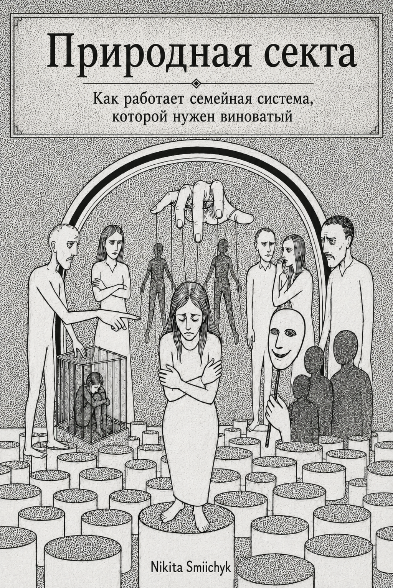

психологическая книга
Природная секта
о семейной системе, которой нужен виноватый
50 страниц о семейной системе, культе версии, назначенном виноватом и выходе из роли, которая годами казалась единственной реальностью. Доступно как PDF для чтения в браузере и EPUB для читалок.

О книге
Это не медицинская книга и не попытка поставить диагноз. Это карта разрушительной семейной системы: как появляется назначенный виноватый, почему версия становится важнее фактов и что происходит, когда человек выходит из навязанной роли.
Понимание системы нужно не для оправдания системы.
Главы
- От автора
- Книга не о «плохих родственниках», а о системе
- Система
- Роли
- Механизмы
- Когда человек выходит из роли
- Для читателя
- После выхода: как система остаётся внутри
- Глубокая психология системы
- Система заканчивается там, где появляется свидетель
- Таблица механизмов
- Практические страницы для читателя
- Мини-глоссарий фраз системы
Читать
PDF можно читать прямо на странице. EPUB сохранён рядом для телефона, планшета или электронной книги.